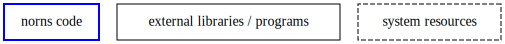
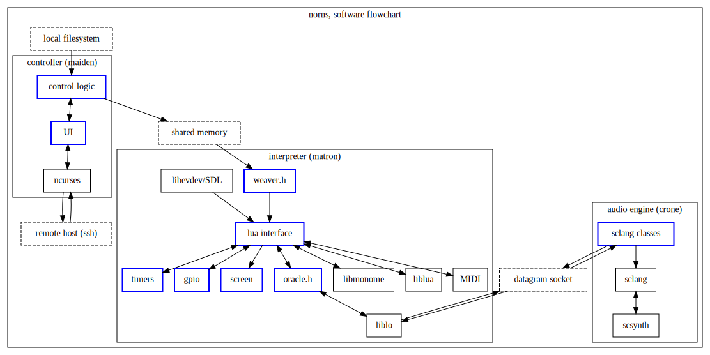

norns - software architecture
Table of Contents
1 document history
| version | date | author |
|---|---|---|
| 1.0 | 2017-01-22 | emb |
2 overview of functionality.
'norns' is an audio processing hardware and software package, built on raspberry pi and linux.
this document proposes a preliminary high-level software design. it's goal is to outline a broad plan for code module separation and identify some of the 3rd-party technologies to use.
primary features of norns:
- provide the user with an interpreted programming environment (e.g. Lua) for soft-realtime control of audio process
- enable remote execution of user code on the fly
- change audio engines on the fly (e.g., delay line processing or waveform synthesis)
- provide an "easy" path to development of new audio engines
- integrate with a wide variety of controller hardware
functionality is divided into three main areas, which may or may not correspond to separate processes/applications, but which shall certainly be implemented as distinct code modules.
2.1 matron
this module manages the interpreter state, executes user code, and glues the interpreted environment to controller hardware and to control over the audio engine.
2.2 maiden
this module provides the user interface, chooses user code to be executed, and communicates with remote hosts.
initially, it will provide a text-only interface for terminal access using ncurses.
future iterations could serve a graphical UI over HTTP (or even just a REST API for client-side applications.)
2.3 crone
this module performs audio processing.
the initial implementation will be in Supercollider and communicate with matron using OSC.
for future iterations, we are considering implementing an LV2 host, likely based on the MOD devices codebase.
3 software architecture


4 implementation notes
4.1 IPC
in the figure above, the header files oracle.h and weaver.h are referenced. this is just to emphasise that each channel of interprocess communication should be handled through a "black box" API.
for example: here we specify the use of shared memory between controller and interpreter, but in the final implementation we may want to allow maiden to run remotely, making serial communication a better choice.
these dedicated headers will specify interprocess protocols, while keeping the transport layer decoupled.
4.2 audio buffers
one requested feature is the ability to manipulate audio buffers from user code. ideally, this feature would be implemented using shared memory between interpreter and processer; in practice, it's not clear that can be easily achieved; it may be possible to used shared memory between an LV2 host and its plugins, but for supercollider such an exchange can only be acheived asynchronously with a sequence of OSC packets.
in any case, direct transmission of audio buffer data will be part of the API described by oracle.h, as well as functions to move audio between crone and the filesystem.
4.3 MIDI
it's not yet clear how we should pass MIDI through the interpreter. it may be impossible to provide sample-accurate events in that circumstance. we could do one or more of the following:
- matron interacts directly with e.g.
/dev/sequencer. fine for coarse time resolution / sparse events. - matron registers as an ALSA or JACK client and receives MIDI event buffers.
- user code can pass MIDI handling over to the audio server somehow (and define logic/transformation? hm), allowing realtime performance.
4.4 HID
there are a number of competing solutions for getting input from HID devices such as gamepads. libevdev is a contemporary alternative to libudev for getting low-level events. but initially we might use a higher-level library like SDL2, just to take some of the pain out of device management.
5 next steps
this document does not describe:
- the vocabulary of interactions between maiden and matron, or matron and crone.
- the UI design for maiden.
these topics will be addressed separately and soon.